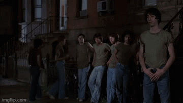

Los protagonistas. Son de Coney Island y su territorio es la playa y la feria. Usan chalecos de cuero marrón sin remera abajo y con su logo en la espalda. Son una pandilla joven, pero increíblemente dura y unida.
The Rogues
Los verdaderos villanos de la película, provenientes de Hell's Kitchen. Son sucios, andan en un auto fúnebre y están liderados por el desquiciado Luther. Su estética es más pesada, tipo motoqueros, con camperas de jean y tachas.
The Gramercy Riffs
La pandilla más grande, organizada y poderosa de todo Nueva York, liderada al principio por Cyrus. Tienen cuartel en Gramercy, se visten con chalecos naranjas/marrones, se manejan con disciplina militar y son todos expertos en artes marciales.
The Baseball Furies
Una de las pandillas más icónicas del cine de culto. Son de Riverside Park, usan uniformes de béisbol antiguos, bates de madera reales y llevan la cara pintada con colores chillones al estilo de la banda de rock KISS. Nunca hablan; solo atacan.

The Orphans
Es una pandilla de "baja categoría" que Cyrus consideraba tan insignificante que ni siquiera los invitó a la gran cumbre de medianoche. No tienen presupuesto para chalecos, así que usan remeras verdes de algodón y pantalones de jean.
The Turnbull AC's
Son un grupo de skinheads violentos con la cabeza rapada y chalecos de jean verdes. Se mueven por la ciudad todos juntos arriba de un colectivo escolar viejo pintado con grafitis y son los primeros en emboscar a los Warriors.
The Punks's
Tienen base en la estación de subte de Union Square. Su líder usa un mameluco de jean sobre una remera a rayas y andan todos en patines de cuatro ruedas. Tienen una de las peleas más brutales y recordadas de la película adentro de un baño público.
The Hi-Hats's
De la zona del SoHo. Tienen una de las apariencias más raras y perturbadoras: van vestidos completamente como mimos, con galeras negras, remeras rojas a rayas y la cara pintada de blanco. Son sumamente territoriales con su barrio de arte.
The Lizzies's
Una pandilla de Greenwich Village compuesta únicamente por mujeres. Parecen tranquilas y amigables, e incluso seducen a tres de los Warriors para llevarlos a su departamento, pero en realidad son letales y usan armas de fuego para cazar a sus rivales.